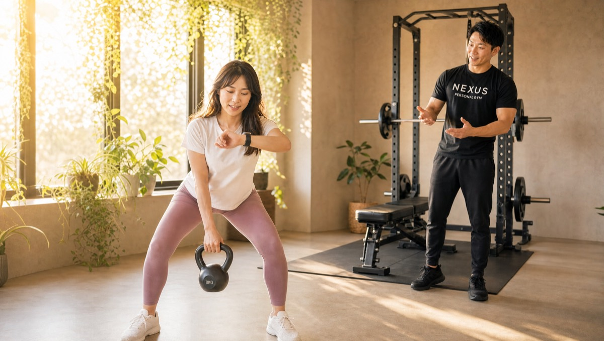

NEXUS Personal Gym ／ 東京都中野区
NEXUSパーソナルジム 中野富士見町店｜納得してから鍛える完全個室ジム

東京メトロ丸ノ内線（分岐線）・中野富士見町駅から通える、完全個室の隠れ家パーソナルジムです。中野富士見町店の特徴は、なぜこの種目か・なぜこの重量か・なぜこの食事なのかを、解剖学や栄養学の根拠に基づいて論理的に説明する「ロジカルな指導」。「言われたからやる」ではなく、自分で理由を理解し、納得してからトレーニングに取り組めます。理屈で納得してから動きたい——そんなエンジニアや研究職の方にも好評です。2026年オープンの新店舗として、一人ひとりに丁寧に向き合います。毎日8:00〜23:00・手ぶらOK・LINE予約で、無理なく続けられます。
- ブライダル対応
- 完全個室
- 中野富士見町駅から
- 論理的な説明
- 2026年オープン
- 毎日8:00〜23:00
この店舗の特徴
NEXUS中野富士見町店は、東京メトロ丸ノ内線（分岐線）・中野富士見町駅から通える完全個室パーソナルジム。落ち着いた住宅地にある隠れ家ジムです。この店舗いちばんの個性は、徹底した「ロジカルな指導」。なぜこの種目を行うのか、なぜこの重量なのか、なぜこの食事なのか——その一つひとつを、解剖学や栄養学の根拠に基づいて言語化して説明します。会員からは「しつこく質問しても、一つひとつ論理的に丁寧に説明してくれる。納得した状態でトレーニングできるから、安心して追い込める」という声をいただいています。理由がわかると、フォームの狙いも効かせる部位も腑に落ち、日々のトレーニングに納得感が生まれます。理屈で納得してから動きたい方、感覚論ではなく根拠で判断したい方にぴったりの店舗です。ウェア・タオル・ドリンク・プロテインまで無料提供の手ぶら通いOK、予約はLINEでサッと完結します。
「なぜ」に、全部答えるトレーナー

「このトレーニング、本当に意味あるのかな？」——そんな疑問を抱えたまま、なんとなく続けるのはもったいないことです。中野富士見町店のトレーナーは、あなたの「なぜ」に全部答えます。この種目はどの筋肉に効き、なぜ今のあなたに必要なのか。なぜこの重量・回数なのか。解剖学や運動生理学の根拠に基づいて、一つひとつ丁寧に言語化して説明します。会員からは「何度質問しても論理的に説明してくれる。納得して取り組めるから、きつくても頑張れる」という声をいただいています。理由がわかると、同じ1回のレップでも「効かせる意識」がまるで変わります。しつこく質問しても大歓迎。むしろ、あなたが理解し納得することを、トレーナーは何より大切にしています。感覚や勢いに頼らず、根拠で前に進む——それが中野富士見町店の指導です。
しつこく質問しても、一つひとつ論理的に丁寧に説明してくれます。納得した状態でトレーニングできるので、安心して追い込めます。理由がわかると取り組む姿勢が変わるのを実感しています。
初回は、身体の現在地の説明から

中野富士見町店の初回は、いきなり追い込むことから始めません。まずは、あなたの身体の「現在地」を正しく把握することから。姿勢のクセ、関節の可動域、日々の生活習慣や食事の傾向をていねいにヒアリングし、どこに課題があり、何をどの順番で変えていくべきかを言語化して提示します。ゴールまでの道筋が言葉で見えていれば、一つひとつのトレーニングが「今日はこの課題のためにやっている」と納得して取り組めます。行き当たりばったりではなく、理由と順序のあるプランだからこそ、遠回りせず結果に近づけます。「なぜ今これをやるのか」が常に明確——それが、納得して続けられる理由です。理屈で組み立てられた計画に沿って、着実に身体を変えていきましょう。
納得したら、あとは実行だけ

理由を理解し、計画に納得できたら、あとはシンプルに実行するだけです。「なぜやるか」が腑に落ちているから、きついケトルベルの1セットも、最後のもう1回も、自分の意志で踏ん張れます。中野富士見町店では、マンツーマンでフォームを一つひとつ確認しながら、狙った部位に確実に効かせていきます。会員からは「納得した状態で取り組めるから、安心して追い込める」という声をいただいています。誰かに言われて嫌々やるトレーニングと、自分が理解して選んだトレーニングとでは、集中力も継続力もまるで違います。理屈で納得し、実行で結果を出す。この両輪がそろうからこそ、確かな変化が積み上がっていきます。感覚だけに頼らない、再現性のあるトレーニングを一緒に続けましょう。
食事も、根拠ベースで

中野富士見町店の食事指導も、やはり根拠ベースです。「とにかく我慢して食べるな」といった精神論ではなく、なぜ体脂肪が増えるのか、なぜこの食べ方が有効なのかを、栄養学の仕組みから説明します。理由がわかれば、外食や会食の場面でも「今は何を優先して選ぶべきか」を自分で判断できるようになります。無理な制限で一時的に落とすのではなく、仕組みを理解して続けられる食習慣へ。月額3,000円（税込）のAI食事指導なら、写真を送るだけで根拠に基づいたアドバイスが届き、忙しい方でも実践しやすい設計です。トレーニングと食事、その両方を理屈で納得しながら整えることで、リバウンドしにくい確かな身体づくりができます。感覚ではなく根拠で選ぶ——それが、続く食事管理の秘訣です。
NEXUSブランドの実績
中野富士見町店は2026年にオープンしたばかりの新店舗です。「新しい店舗で大丈夫かな」と感じる方もいらっしゃるかもしれませんが、ご安心ください。NEXUSは全国約70店舗を展開する完全個室パーソナルジムで、会員継続率は96%。全トレーナーが3ヶ月の厳しい自社教育プログラムを修了してからデビューする、全店共通の教育体制を敷いています。同じ中野区の系列店でも、多くの高評価をいただいています。新店だからこそ、一人ひとりに丁寧に向き合い、なぜこの種目・重量・食事なのかを論理的に説明する指導を徹底しています。まずは無料体験で、その指導の質を直接お確かめください。
※系列店の評価は2026年7月時点のGoogleマップ口コミによります。
結婚式前のボディメイクを、中野富士見町で

「ドレスの試着で二の腕が気になった」「背中の開いたデザインを、体型を理由に諦めたくない」——挙式という動かせない期日があるからこそ、ボディメイクは最後までやり切れます。中野富士見町店では、まず挙式日とドレスのデザインをうかがい、背中・二の腕・デコルテ・ウエストという、ドレスでもっとも視線が集まる部位から優先順位をつけていきます。完全個室のマンツーマンだから、人目を気にせず自分の身体とだけ向き合えます。

残された日数によって、やるべきことは変わります。中野富士見町店では挙式日から逆算した90日プラン・60日プランを用意し、「いつまでに、どの部位を、どこまで」を最初に設計します。極端な食事制限で当日フラフラ……ということがないよう、その日のコンディションから逆算する無理のない指導で、式当日にピークを合わせます。会員の約85%が女性で、ブライダルのご相談は日常的。体に不必要に触れないノータッチ指導を基本にしているので、はじめての方も安心です。

週を追うごとに、ドレスの試着で鏡に映る自分が変わっていきます。背中がすっと伸び、二の腕のたるみが引き締まり、デコルテに華やかさが出る。「このデザインで大丈夫かな」から「このドレスを選んでよかった」へ——目標が数字ではなく“当日の自分の姿”だからこそ、モチベーションが途切れません。中野富士見町エリアで挙式を予定されている方は、エリア内の式場への下見や打ち合わせの動線に、そのままトレーニングを組み込めます。

迎えた挙式当日。積み重ねた90日・60日は、鏡の前の安心感になって返ってきます。姿勢よく背筋を伸ばして立ち、写真のどの角度でも堂々といられる——それは、頑張ってきた自分だけが手にできる自信です。中野富士見町店は、その一日のために全力で伴走します。

挙式は、新しい生活のスタートでもあります。せっかく作り上げた身体を、そのまま新生活の習慣に。中野富士見町店は毎日8:00〜23:00営業・月4回18,000円（1回4,500円〜）から続けられるので、挙式後の体型維持から、将来の産後の体型戻しまで長く伴走できます。全国約70店舗のネットワークがあるため、引っ越しや里帰りの際も最寄り店舗へ。「一生に一度」のために始めた習慣が、その後の人生を支える土台になります。
挙式まで残り80日で駆け込みました。背中の開いたドレスに合わせて、二の腕と背中を中心にプランを組んでもらい、当日は自信を持って写真に写れました。式後もそのまま通っています。
上記はサービス内容をわかりやすく伝えるためのモデルケース（イメージ）であり、実在するお客様の口コミではありません。Google口コミは本ページ内の該当セクションに実際の内容を要約して掲載しています。
挙式日からの逆算タイムライン｜ブライダル専用ページを見る料金プラン
入会金は通常55,000円、無料体験当日入会で15,000円（税込）に割引。全店舗共通の料金です。
アクセス
- 店舗名
- NEXUSパーソナルジム 中野富士見町店
- 住所
- 〒164-0012
東京都中野区本町5-45-2 サングレース B01号 - 最寄り駅
- 東京メトロ丸ノ内線（分岐線） 中野富士見町駅
- 営業時間
- 毎日 8:00〜23:00
- 電話番号
- 050-1790-8493
Googleマップの口コミ
出典：Google マップ
NEXUS中野富士見町店は2026年オープンの新店舗。質問に論理的に答え、納得してから取り組めるロジカルな指導が評価されています。口コミはまだ3件ですが、同じ中野区の系列店（中野店★4.9・沼袋店★5.0・新中野店★4.9）と同じ教育体制のトレーナーが指導します。
しつこく質問しても、一つひとつ論理的に説明してくれます。納得した状態で取り組めるので、これからの成長が楽しみです。感覚ではなく根拠で教えてくれるのが信頼できます。
中野富士見町店のよくある質問
Q中野富士見町にパーソナルジムはありますか？+
Q種目やメニューの理由を説明してもらえますか？+
Q新しい店舗ですが、トレーナーの質は大丈夫ですか？+
Q挙式まで3ヶ月ですが、結婚式に間に合いますか？+
Qドレスで気になる背中や二の腕を集中的に絞れますか？+
Q結婚式が終わった後も通い続けられますか？+
よくある質問（全店共通）
料金・制度などNEXUS全店に共通するご質問です。さらに詳しくは110問のFAQをご覧ください。
Q料金はいくらですか？+
Q手ぶらで通えますか？+
Qキャンセルはいつまでできますか？+
Q食事指導はありますか？+
Qトレーナーはどんな人ですか？+
Q女性会員は多いですか？+
Q体験の流れは？+
NEXUSパーソナルジムの特徴・料金をもっと見る